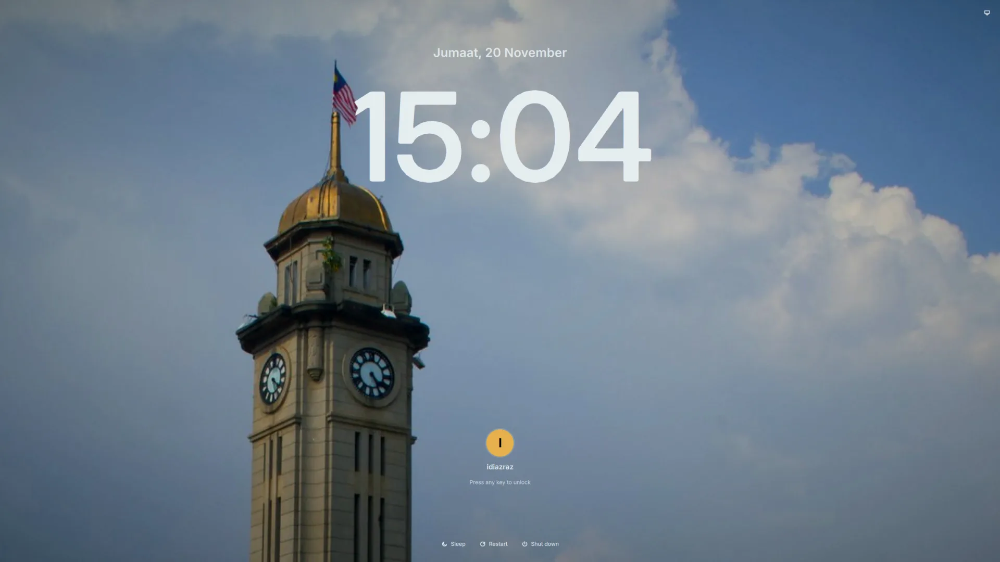

Your files
Copy from Windows in the welcome app brings over your Desktop, Documents, Pictures, Music and Videos, plus your Edge and Chrome bookmarks, from the Windows drive next to KrissOS.


Introducing the first major release
Arch Linux, made ready for everyday people. Install it without internet, find your way like on Windows, then work, game and run your own AI. Senang je.
The name
Every KrissOS release is named after a place in Malaysia. The first one is named after home: Sungai Petani, Kedah, and the clock tower in the middle of town.
The desktop



The wallpaper

Switching
Your habits work here. The look is our own: soft, rounded and calm, with one Sky Cyan accent.

Copy from Windows in the welcome app brings over your Desktop, Documents, Pictures, Music and Videos, plus your Edge and Chrome bookmarks, from the Windows drive next to KrissOS.
Sign in to Steam and play your Windows games as usual, through Proton (not the car). Got Xbox Game Pass? Try Xodus Nexus (still experimental). Not sure? Look your games up in the game checker first.
Most of what you use has a Linux version or runs in the browser. For the rest, WinBoat runs Windows apps in their own windows.
Internet needed to install. Everything is on the USB stick.
Signed repo on top of Arch. Small enough for two people to keep alive.
Languages from day one: English and Bahasa Melayu.
Promises we keep in every release.
One computer
Work in the morning, play at night, and run your own AI in between. No second computer, no dual boot.
A calm desktop where things are where you expect them. If an update goes wrong, pick an earlier snapshot when you start the computer. Windows-only apps run through WinBoat.
Steam is set up for you, with the right drivers for your graphics card, older NVIDIA cards included. Power modes tune the system when you start playing.
Run AI models on your own computer, with no account and no cloud. Ollama is set up for your graphics card, and the coding tools you already use are one step away.
Promises
What KrissOS holds to in every release. No fine print.
kriss rollback, and undo our tools' changes with revert.What's inside
Everything else comes straight from Arch. We ship only what is ours.
A taskbar, a launcher you type into, notifications, quick settings and a lock screen. It is the default desktop.
Try KrissOS before you install. A new build comes out every night, and only after it boots in our tests.
Opens on first start: the game checker, your usual apps, Copy from Windows, drivers and extras.
Steam, GameMode, Gamescope and MangoHud in one install, plus power modes that switch with a click.
WinBoat runs Windows apps in their own windows. kriss winapps checks your computer first and sets it up.
Ollama from the welcome app, tuned for your graphics card, and an optional step to install the coding agents you already use.
kriss-vm gives a Windows VM your graphics card, on desktops. It checks your hardware first and undoes everything in one command.
kriss migrateAlready on Arch or CachyOS? One command turns that install into KrissOS in place, with your files and apps kept.
Installs next to Windows, with every snapshot one pick away in the boot menu. Being tested now.
Our own kernel, tuned for modern processors and built in the open. A standard build covers older PCs.
Prefer a Mac? An optional layout with a top bar, a centred dock and window buttons on the left, in the same look.
KrissOS will run with Secure Boot on, and stay signed after every update.
Try it
Boot the live USB or a VM. Nothing gets installed until you say so.